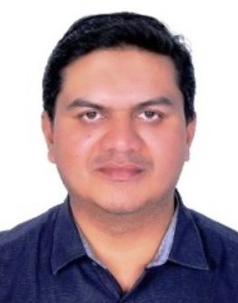

Group Openings
Postdoctoral Fellow
This position is in the area of low power analog mixed-signal IC design for biomedical applications, including analog to digital data converter, instrumentation amplifier, voltage/current reference, CMOS/MEMS sensors and sensor interface, custom digital processor, etc. Tapeout in advanced technologies is available.
PhD Students
HBKU offers competitive scholarships to outstanding applicants.
Requires a master’s degree, detailed requirements can be found on
hbku admission
Please send the following info to <bwang{at}hbku.edu.qa> for initial review.
1. GPA of all (including incomplete) degrees in % out of 100 (excluding non-technical and pass/fail courses)
2. CV with all publication list and previous project experience
3. One representative publication, 1st- or 2nd-author, in PDF format
Group Members
Principle Investigator
|
|
Dr. Bo Wang received the B. Eng. (Excellent Graduate Honor) degree in Electrical and Electronic Engineering from Zhejiang University (ZJU), Hangzhou, China, in 2010; and the M. Phil and Ph. D. degree in Electronic and Computer Engineering from the Hong Kong University of Science and Technology (HKUST), Hong Kong, in 2012 and 2015, respectively, under the supervision of Professor Amine Bermak, an IEEE Fellow. He has been an Assistant Professor in the College of Science and Engineering, Hamad Bin Khalifa University (HBKU), Qatar, from 2017 to 2023, and is now an Associate Professor.
He worked in RLE, Massachusetts Institute of Technology (MIT) with Professor Jing Kong and Professor Anantha P. Chandrakasan on low-power graphene-based pressure sensor interface design, in 2016. From 2010 to 2015, he was with the Smart Sensory Integrated System Laboratory (s2is) of HKUST as a research assistant and then a resarch associate. From 2012 to 2014, he also worked as an mixed-signal IC designer in ZAMI, Hangzhou, to commercialize the chip during his Ph. D reseach. Bo Wang is a member of IEEE (CAS society and SSCS society) and an invited reviewer of several journals/conferences. Bo Wang was the recipient of the Best Design Award in the Asia and South Pacific Design Automation Conference (ASP-DAC) in 2016. He served as the Technical Program Co-Chair for The International Conference on Microelectronics (ICM) in 2024. He also serves as a Technical Committee Member of the IEEE CAS Committee on sensory systems and is an Associate Editor for the IEEE Sensors Journal.
|
Postdoc Researcher
|
|
Dr. Muhammad Asfandyar Awan received his B.Eng. degree in Electronics Engineering from COMSATS University Pakistan in 2009. He graduated with M.Eng in electrical and electronics Engineering in 2012 from Linköping University Sweden, with an emphasis on System on Chip design (SoC-ware). From 2013 to 2017 He worked as a Research Assistant in a research Institute Microelectronics Circuits Center Ireland (MCCI), where he worked on Low Power Low-Speed Bio-Medical Front-Ends and Analog Building Blocks for high Speed(2GS/S) ADC. Before joining HBKU in 2020, he served as Analog Design Engineer in US-based Integrated circuits design industry from 2017 to 2019. He received his PhD from HBKU in 2024, and is now a Postdoctoral researcher focusing on bioluminescence sensor readout. |
Ph.D. Students
|
|
Amgad Ghonem received his B.SC. and M.Sc. degrees in Electronics and Communications Engineering from Ain Shams University, Egypt in 2013 and 2016 respectively. During M.Sc., he worked as a research assistant with focus on the design of SRAM for low voltage operation. From 2017 to 2021, he worked as a research assistant at RWTH Aachen University, Germany, where he worked on TCAMs using different technologies with focusing on emerging memory based non-volatile TCAMs using 22 nm technology. In 2022, he started studying project management for Industry. Before Joining HBKU for PhD in 2023 he worked as senior design engineer at X-FAB Germany. His research interests include custom digital and mixed-signal circuits design for biomedical applications. |
|
|
Zain Ul Islam received his BS in Electronic Engineering from International Islamic University Islamabad (IIUI) and MS in Electrical Engineering from National University of Sciences and Technology (NUST), Pakistan. Currently, he is pursuing his PhD degree. His research interests are in RF Antennas, Microwave Engineering, etc. He has authored/co-authored around ten 10 research papers in well reputed international conferences and journals. He received two best research paper awards in IEEE conferences. |
|
|
Ali Raza received his B.Sc. in Computer Engineering from HITEC University, Taxila in 2020 and M.Sc. in Computer Engineering from UET Taxila in 2023.He worked as a Research Scholar at the Swarm Robotics Lab, NCRA, specializing in computer vision, edge computing, and human activity recognition. He also served as CTO at U-Go, where he developed machine learning-based speech assessment applications. Then, he worked as a Lecturer at NUTECH, Islamabad, and a Lab Engineer at HITEC University. He was a Finalist in the OpenCV Competition 2021 and the National Idea Bank. Since 2024, he started his Ph.D. research in edge AI accelerator design for sensing applications. |
Research Assistant
|
|
Khalil Ahmad received his B.Sc. Degree in Mechatronics Engineering from University of Engineering and Technology (UET), Taxila, Pakistan in 2013. Before joining HBKU, He served as an Embedded Engineer with Qatar Based start-up company for the development of IoT (Internet of Things) based products. He has vast experience in the development of IoT Devices using different modes of communication (WIFI, BLE, RF) by research & development, PCB design, firmware programming, assembly of sensors with microcontrollers and mechanical fabrication. |
Prior Researchers
|
|
Samar Shurbaji (currently A a PhD student in QU) received her B.Sc. Degree in biomedical sciences in 2016, then pursued her Master's degree in materials science and technology in 2019 from Qatar University. Ms.Shurbaji's experience is mostly focused on projects related to the biomaterials fields as well as microfluidics. She was involved in projects including nanomaterials production, inducing shear stress over a cell's monolayer using microfluidic devices, and materials fabrication. She served as an RA for one and half years in HBKU on a integrated bioluminescence sensing system. |
|
|
Neam Fares received her B.Sc degree in Computer Engineering from Qatar University in 2019, and her MS degree in Cybersecurity at Hamad Bin Khalifa University, Qatar in 2023. Her research enthusiasm is in hardware security, cryptography, and edge device security. She serverd as an RA in HBKU for a year working on a low power lightweight crypto engine for IoT devices. |
|
|
Dr. Tsz Ngai Lin (currently in Qualcomm) received the B.Eng. degree (First Class Honours) in electronic and communications engineering from The University of Hong Kong (HKU), Hong Kong, in 2013, and the M. Phil degree in electronic and computer engineering from The Hong Kong University of Science and Technology (HKUST), Hong Kong, in 2016. His research interests include instrumentation amplifiers, precision analog, and mixed-signal interface electronics, and low-power circuit design. Mr. Lin was a recipient of the HKUST postgraduate studentship and the HBKU full scholarship. He joined our group to pursue the Ph.D. degree in Jan. 2017 and defended his thesis in April 2021. After that, he was a postdoc in our group from Aug. 2021 to March 2022 before he joined Qualcomm. |
|
|
Dr. Ying Yi (currently a Professor in China University of Geosciences) was a post-doctoral fellow with the department of Electrical and Computer Engineering at the University of British Columbia from July 2016 to Sep. 2018. He received the MS degree from the Department of Electronics and Radio Engineering, Kyung Hee University in 2010, and then received the Ph.d degree in electrical engineering from the University of British Columbia in 2016. His research interests are Bio-MEMS, implantable electronics, RF wireless systems, and circuits. He joined our group as a senior scientist in Dec. 2018 and left in June 2021. |
|  |
|
Dr. Nasir A. Quadir (currently a Researcher in UAE) received the B.Tech. degree in electronics and communication engineering from Jamia Millia Islamia University, New Delhi, India, in 1998, the M.Sc. degree in electronics engineering from Universiti Sains Malaysia in 2001, and the Ph.D. degree in electrical engineering from University College Cork, Ireland, in 2014. From 2001 to 2010, he was with Sires Labs Sdn. Bhd., Malaysia, designing and developing transceiver chipsets for automotive applications using fiber optic communication. From 2013 to 2016, he was an SRC Post-Doctoral Fellow with the American University of Sharjah, UAE. During that time, his research was focused on developing a biomedical humidity-based CMOS sensor for orthodontic applications as well as in designing rectifiers for ambient energy harvesting. He worked CMR Institute of Technology as an Associate Professor in 2017 till 2019. His research interest includes Low power high speed optical links, Energy Harvesting, Sensor Interfaces etc. He joined our group as a postdoc in Dec. 2019 and left in June 2021.
|
|
|
Ghassan Saad (currently in KPMG) received his BS degree (Best Student Graduate Award) in Computer Engineering from Hamad Bin Khalifa University, Qatar, in 2021. He pursued his MS degree in Data Science and Engineering at Hamad Bin Khalifa University, HBKU, Qatar. His research interests include machine learning, deep learning, and hardware acceleration. |
Back to top»